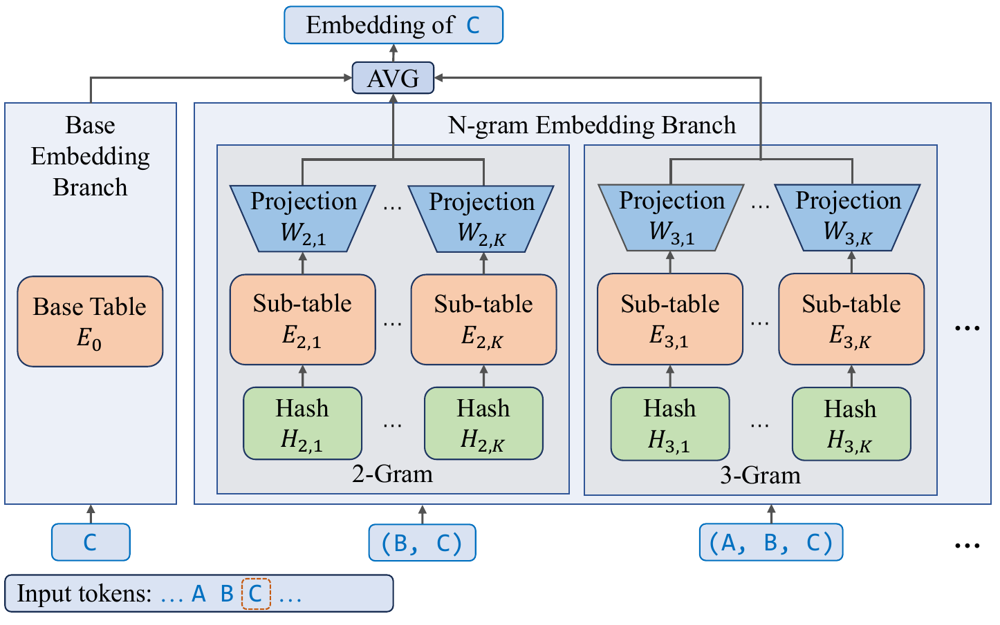
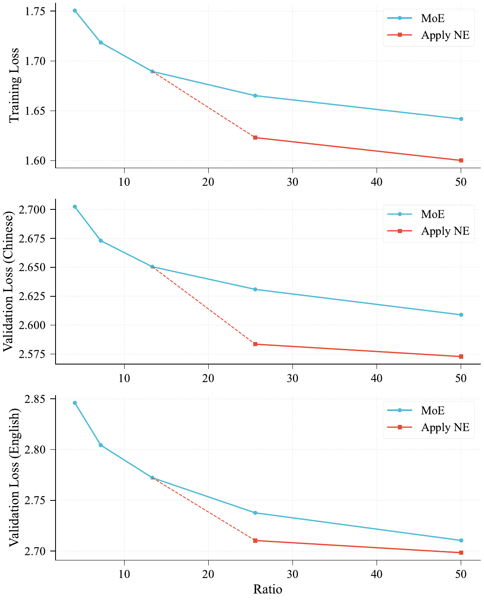

1. 反直觉的核心发现：Embedding Scaling vs. Expert Scaling
传统看法：MoE 是 scaling sparsity 的唯一出路。但这篇指出 MoE 有两个根本瓶颈——(1) expert 数量边际收益递减；(2) all-to-all 通信 / 内存带宽开销随专家数膨胀。
关键观察：embedding 层是一个 被忽视的、与 MoE 正交的稀疏维度，因为它的 lookup 复杂度是 $O(1)$——你可以把参数量无限扩展，几乎不增加任何计算和通信开销。论文系统地证明：在特定 regime 下，把参数投到 embedding 比投到 experts 更划算。
三个核心 regime 判断（来自 280M / 790M / 1.3B 的 scaling 实验）
| 观察维度 | 结论 | 数字证据 |
|---|---|---|
| 专家数是否过 sweet spot | MoE 在低 sparsity 区收益大、高 sparsity 区收益陡降（log-linear 衰减） | Figure 2（scaling-200M）：低 ratio 区 NE < MoE baseline；高 ratio 区 NE > MoE baseline |
| 模型宽度效应 | 模型越宽，NE 优势窗口越大 | 280M 激活：ratio > 30 时 NE 输给 MoE；790M：仅英文 val set 输；1.3B：ratio 高达 50 仍有优势 |
| 模型深度效应 | 模型越深，NE 优势越被稀释 | 1.3B 配 20 vs 40 layers：深度 > 20 layers 后 NE 相对增益显著收缩（pre-norm 的 residual signal 衰减） |
四条 architectural principle（论文用 Summary box 强调）
- NE 应在专家数超过 sweet spot 后才引入（低 sparsity 区 NE 打不过加专家）
- NE 占总参数不超过 50%（U 型曲线：过了某个比例 NE 反而劣于 MoE，intersection point 大约在 ratio=20 处）
- NE 词表大小应偏离 base vocab 整数倍（不然 2-gram hash collision 数量爆炸，Figure 3）
- N=3-5、K≥2 时 NE 配置对超参不敏感（N=2, K=1 是死角）
2. N-gram Embedding Scaling 方法
2.1 公式（核心 Over-Encoding 设计）
基础版本（Eq. 1）：对每个 token $t_i$，将其 embedding 增广为 base embedding 与 $N-1$ 个 n-gram embedding 的平均： $$e_i = \frac{1}{N}\big(E_0(t_i) + \sum_{n=2}^N E_n(\mathcal{H}_n(t_{i-n+1}, \dots, t_i))\big)$$
polynomial rolling hash（Eq. 2）：$\mathcal{H}_n = (\sum_{j=0}^{n-1} t_{i-j} \cdot V_0^j) \% V_n$
最终版（Eq. 3，借鉴 Huang 2025 的 "Over-Encoding"）：每个 n-gram embedding 再拆成 $K$ 个子表，hidden size 缩 $\frac{1}{(N-1)K}$，并加 $W_{n,k}$ 线性投影回原空间。这个设计的精妙之处是 参数量与 $N, K$ 无关（因为 sub-table 维度反比缩放），可以在不增加参数预算的情况下缓解 hash collision。
2.2 Embedding Amplification（关键稳定化技巧）
这是论文里最容易被忽略但极重要的发现：默认初始化下，attention 模块输出的 L2 norm 比 embedding branch 的 identity path 大一个数量级（~10×），导致 embedding 信号被 residual stream "drown out"。
两种修复方案（都来自 takase2025spikemorestabilizingpretraining）：
- Scaling Factor：给 embedding 输出乘 $\sqrt{D}$
- Normalization：embedding 输出与 residual 合并前先 LayerNorm
效果：训练 loss 和两个验证集 loss 一致下降 0.02——在大模型尺度这是个非常大的纯增益。论文取名为 Embedding Amplification。
3. 架构与训练
3.1 LongCat-Flash-Lite 架构
| 维度 | 配置 | |
|---|---|---|
| Total params | 68.5B | |
| N-gram Embedding params | 31.4B（46%） | |
| Activated params | 2.9B – 4.5B（zero-experts 动态） | |
| Architecture | 与 [[2509_LongCat_Flash\ | LongCat-Flash]] 完全相同（继承 ScMoE + zero-computation experts + variance alignment 全套） |
| Shortcut layers | 14 | |
| MoE 模块 | 256 FFN experts + 128 zero-experts，每 token 选 12 | |
| 训练数据 | 11T tokens (8k seq) pre-train + 1.5T tokens mid-train (128k seq) + SFT | |
| 长上下文 | YARN @ 32k stage，最终支持 256k |
3.2 与 LongCat-Flash 大基座的关系
- 同架构：Lite 完全继承 Flash 的 ScMoE / zero-expert / variance alignment / hidden z-loss 全套设计，没有架构创新
- 不使用 Model Growth：Lite 是 from scratch 训练，Flash 用了 14→28 层的 stack growth。这是两者的关键区别
- 核心差异在参数分配：Flash 把 560B 全压在 MoE 专家上；Lite 把 68.5B 拆成 31.4B embedding + 37.1B MoE——同系列、不同 scaling 维度选择
- Flash-Lite-Vanilla baseline：论文把 NE 参数全部转成 experts，得到一个等参数等训练策略的对照基线，验证 NE 优势不是参数量带来的，而是分配方式带来的
4. 实验结果
4.1 Base model：NE vs. Vanilla（同 1.3T tokens 训练后）
| Benchmark | LongCat-Vanilla@1.3T | LongCat-Flash-Lite@1.3T | Δ |
|---|---|---|---|
| MMLU | 64.81 | 64.01 | -0.80 |
| MMLU-Pro | 34.43 | 35.89 | +1.46 |
| CEval | 64.09 | 67.21 | +3.12 |
| CMMLU | 67.08 | 69.55 | +2.47 |
| BBH | 38.54 | 43.67 | +5.13 |
| GPQA | 25.37 | 29.66 | +4.29 |
| DROP | 47.92 | 52.43 | +4.51 |
| GSM8K | 50.00 | 50.50 | +0.50 |
| HumanEval+ | 28.66 | 31.10 | +2.44 |
| MultiPL-E | 30.20 | 30.03 | -0.17 |
| BigCodeBench | 33.42 | 36.05 | +2.63 |
判断：除了 MMLU 和 MultiPL-E 略输，Lite 几乎全线领先，reasoning 类增益最大（BBH +5.1、GPQA +4.3、DROP +4.5）。这验证了核心 thesis。
4.2 Chat model：vs. 同档竞品
| 任务类别 | Kimi-Linear-48B-A3B | Qwen3-Next-80B-A3B | Gemini 2.5 Flash-Lite | LongCat-Flash-Lite |
|---|---|---|---|---|
| Agentic Tool Use | ||||
| τ²-Airline (avg@8) | 44.0 | 45.5 | 35.0 | 58.0 |
| τ²-Retail (avg@8) | 18.86 | 57.3 | 37.5 | 73.1 |
| τ²-Telecom (avg@8) | 15.68 | 13.2 | 21.93 | 72.8 |
| VitaBench (avg@4) | - | 5.80 | 4.50 | 7.00 |
| Agentic Coding | ||||
| SWE-Bench | 32.8 | 37.6 | 41.3 | 54.4 |
| TerminalBench | 20.0 | 15.19 | 20.0 | 33.75 |
| SWE-Bench Multilingual | 37.2 | 31.3 | - | 38.1 |
| PRDBench | - | 15.36 | - | 39.63 |
| General / Math（略） | 接近 | Qwen3-Next 最强 | 中等 | 多数领先 Kimi/Gemini |
核心判断：在 agentic 任务上 Lite 取得 断崖式领先（τ²-Telecom 72.8 vs. Qwen 13.2，差 5.5×；SWE-Bench 54.4 vs. Gemini 41.3）。在通用知识 / 数学 reasoning 上 Qwen3-Next-80B-A3B（80B 总参）整体更强，但 Lite 在中文（CEval 86.55 / CMMLU 82.48）显著超过 Gemini 2.5 Flash-Lite 和 Kimi-Linear。
4.3 Scaling curve 核心数字（Section 3）

- 280M activated：ratio > 30 时 NE 反而劣于 MoE baseline
- 790M activated：仅英文 val set 在 ratio=30 处劣于 MoE，其余全部领先
- 1.3B activated：ratio = 50 时 NE 仍保持优势——宽度越大，NE 适用窗口越大
- 深度效应：1.3B 在 20 layers 时 NE 优势明显，到 40 layers 时优势大幅收缩
4.4 N、K 超参 ablation（790M model）
- $N=2, K=1$ 是死角，明显劣于其他配置
- $N \geq 3, K \geq 2$ 后性能方差很小，配置不敏感
- 实践经验：$N \in [3, 5]$ 持续接近最优
5. 高效推理：从理论稀疏到实际加速
5.1 MoE 激活参数的实质降低
NE 把参数从 MoE 搬到 embedding，embedding lookup 只按 token 数算开销、不按参数量算——所以总参数不变、但 MoE 激活参数大幅降低。这对 I/O bound 的解码场景（大 batch）是直接红利。
5.2 Speculative decoding 的天然协同
- 大 batch + spec decoding 才能把"参数稀疏"翻译成"延迟降低"
- draft model 用普通 embedding（绕过 n-gram lookup 开销）
- draft 阶段缓存 n-gram embedding，verification 阶段复用
5.3 进一步的 NE-spec 协同（论文提出但未完成）
- NE-based drafting：把 NE 当超快 draft model（自带 short-range context）
- Early rejection：NE 表示作为 confidence estimator，提前拒绝低概率 draft token
5.4 系统级优化
- N-gram Cache（仿 KV cache 的设计）：CUDA kernel 直接在 device 管理 N-gram ID，绕过 inference framework 的复杂调度
- Kernel fusion：AllReduce+ResAdd+RMSNorm 等组合融合
- Optimized Attention Combine：splitkv combine kernel latency 降低 50%
- PDL (Programmatic Dependent Launch)：解决轻量模型的 kernel launch overhead 瓶颈
- 部署：Eagle3 + 3-step spec decoding + wide EP + SBO（继承 Flash 的推理栈）
6. 局限与思考
- MMLU / MultiPL-E 略输 Vanilla：说明 NE 不是 "免费午餐"，在某些任务上 dense expert 仍有优势。论文没深入分析哪些任务适合 NE、哪些不适合
- PLNE 没采用：Per-Layer N-gram Embedding 理论上更灵活，但实验中宽度/深度增加后未展现稳定优势，且会引入额外激活参数（每层投影矩阵）。论文承认这块还需要更多研究
- Hash collision 仅在 2-gram 上观察：高阶 n-gram 的 collision 行为没分析
- 1.3B 是实验上限：所有 scaling law 结论都基于 ≤1.3B activated 的实验，外推到 3B+ activated（即 LongCat-Flash-Lite 本身的尺度）只是基于宽度趋势的合理推测，没有直接验证
- 训练数据相对小：11T pre-train + 1.5T mid-train，比 LongCat-Flash 的 20T 少一半——可能与小基座定位有关，但也意味着上限可能没充分挖
7. 对小模型研究的启发
- 重新审视 embedding 层：过去几年的 scaling law 研究几乎都聚焦在 FFN / attention / layer 数，这篇把 embedding 拉回主舞台。对资源受限的小基座（≤10B activated）团队，NE 是比"再加 expert"更划算的杠杆
- 宽度优于深度（在 NE 语境下）：这与一般 "deep & narrow better for MoE" 的直觉相反，值得在小模型设计时重新评估 width/depth 比例
- 小基座的 agent 友好性：Lite 在 agentic / coding 上击败 80B 级别对手，说明 NE 这种 "cheap capacity" 对需要长 trajectory、复杂工具依赖的任务可能是结构上更适合的（论文推测是 NE 提供了更丰富的 token-level 表示）
- 可操作的设计 checklist：NE 占比 ≤50%、词表大小偏离 base vocab 整数倍、$N \in [3,5], K \geq 2$、必加 Embedding Amplification——这些都是从 0 开始复现 NE 的最小配置
- 正交 scaling 维度的思路：除了 expert 和 embedding，是否还有其他被忽视的稀疏维度？例如 router 本身、attention head 维度、KV cache 的词表化？
8. 在 LongCat 系列中的定位
LongCat-Flash 是大基座（560B MoE），把 expert sparsity 推到极致；本篇是 小基座路线（68.5B），探索了与 Flash 正交的 embedding sparsity 维度。两者共享 ScMoE / zero-expert / variance alignment 全套基础设施，差异在 scaling 维度选择——这是 LongCat 系列的方法论特征：架构栈统一，参数分配策略多样化。
📊 相关可视化: 暂无（如需后续制作 poster 可基于本笔记）
9. 关键链接
- arXiv: https://arxiv.org/abs/2601.21204
- HuggingFace: https://huggingface.co/meituan-longcat/LongCat-Flash-Lite
- 同系列大基座: LongCat-Flash Technical Report (2509.01322)
- 同系列推理版: LongCat-Flash-Thinking / Thinking-2601
- 同系列全模态: Flash-Omni / LongCat-Next
- 同系列形式化: Flash-Prover